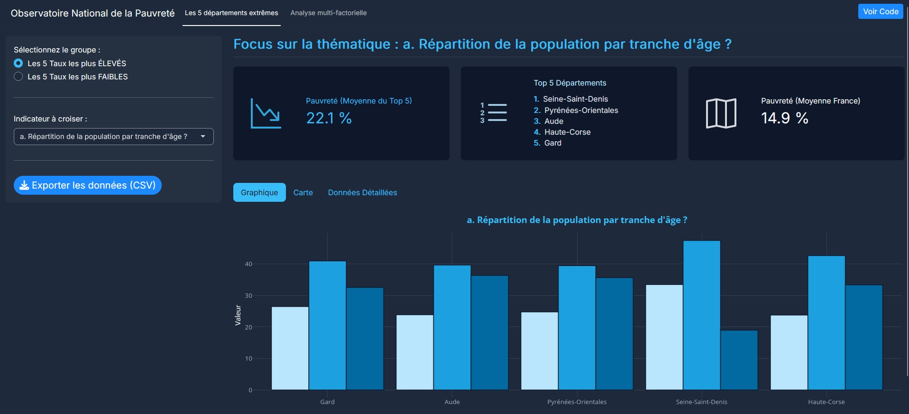
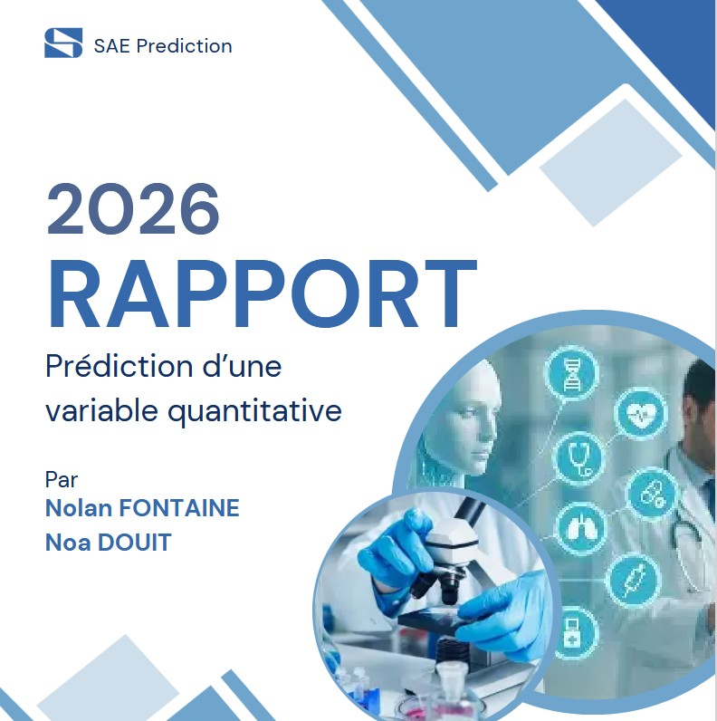
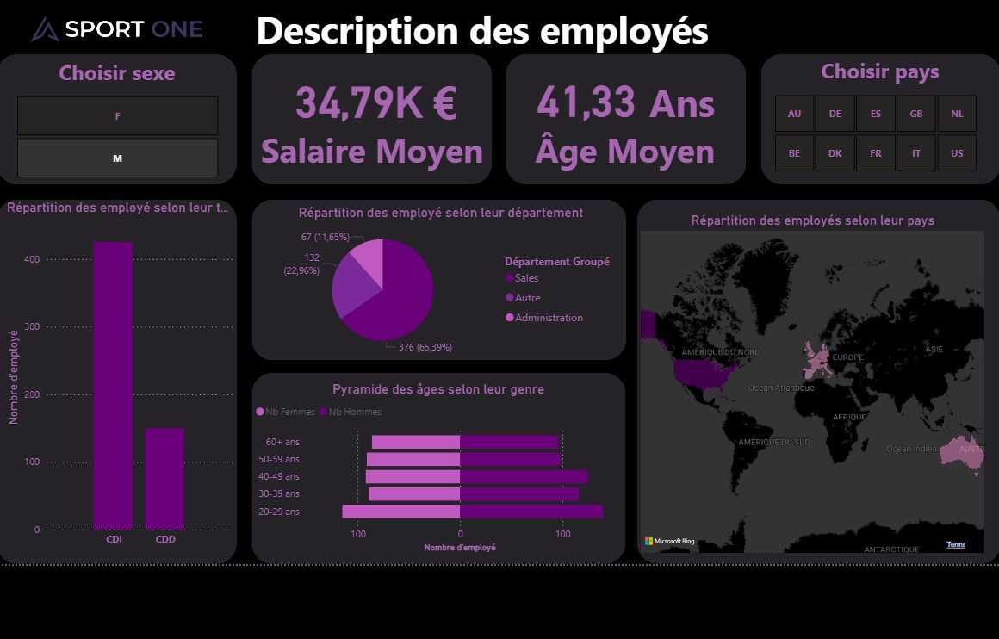
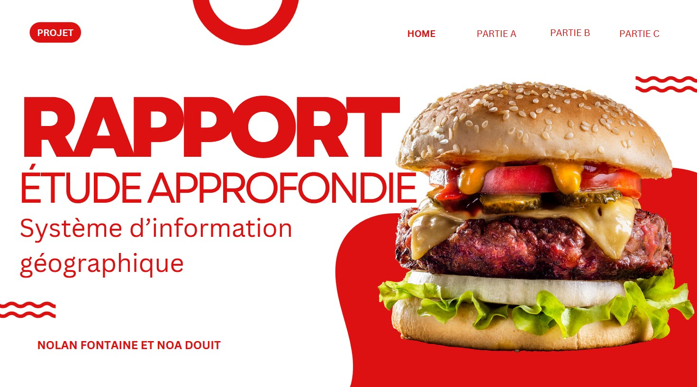
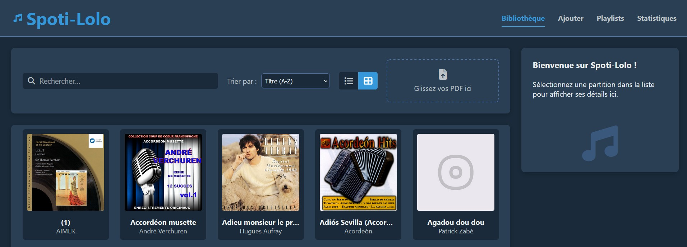

Mes Projets Académiques
Explorez mes réalisations techniques réparties par année d'études.

Avril 2026
#RShiny
#Clustering
Analyse Multivariée Territoriale
En savoir plus

Mars 2026
#Python
#MachineLearning
Prédiction d'une variable quantitative (ML)
En savoir plus

Janvier 2026
#Talend
#DataWarehouse
Pipeline ETL automatisé
En savoir plus

Décembre 2025
#QGIS
#Cartographie
Analyse Spatiale (SIG)
En savoir plus

Novembre 2025
#PHP
#MySQL
Application Web PHP
En savoir plus
Octobre 2025
#R
#Optimisation
Plan d'Expériences
En savoir plus